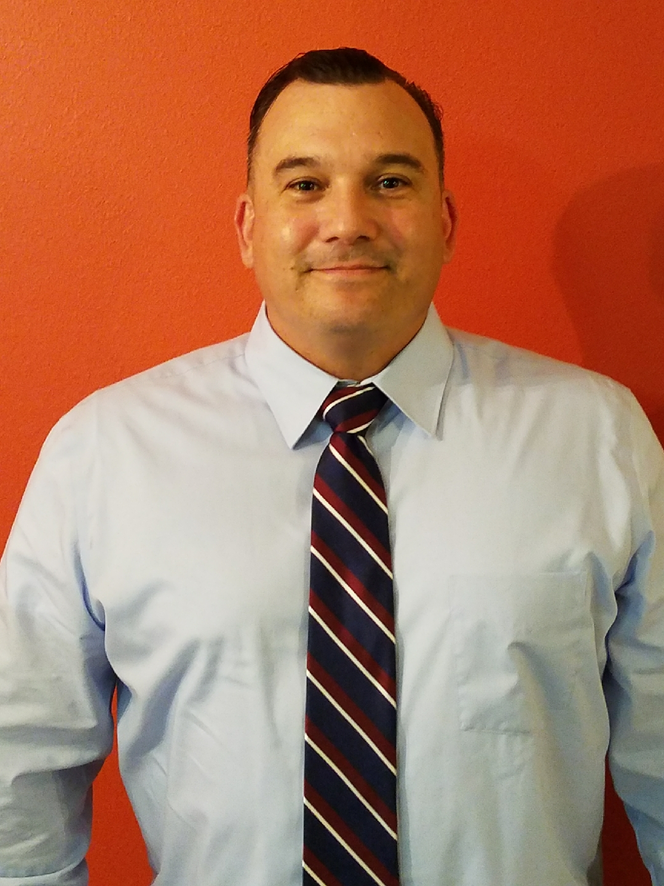

About William
William ‘Billy’ Talley was born in Hayward, California. Before joining the Army, he had several jobs. His favorite job was working at Hollywood Video because he loves movies and was able to watch as many as he wanted for free, while his least favorite job was working at a gas station. If he could choose any line of work, he would ideally be working as part of a web design team, focusing on user interface and visual design tasks. Alternatively, he would love to be a documentary film maker. He has a wife and two sons, and one of the funniest memories he has was when he and his two sons dressed up and took photos with Santa Claus. In his spare time, he enjoys watching true-crime documentaries, especially ones focused on serial killers. He is also a huge fan of stand-up comedy and is looking forward to being able to go to comedy shows again.